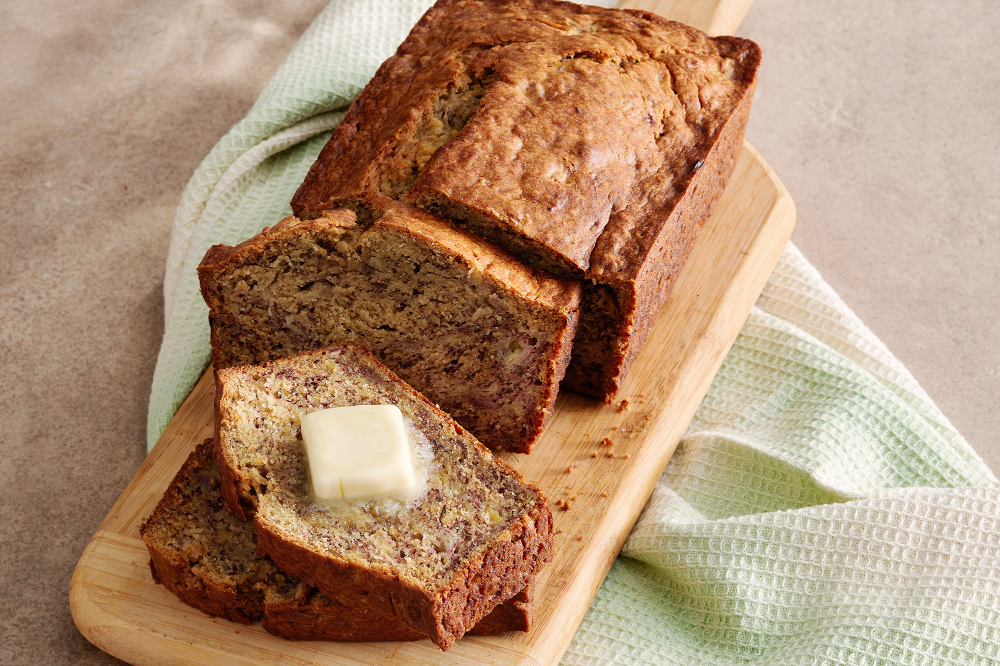

Banana Bread

Description
A delicious recipe that incorporates bananas into a fluffy sponge from heaven.
Ingredients
- 85g Butter
- 150g Sugar
- 225g Mashed Banana
- 1 Egg
- 1tsp Vanilla Extract
- 60g Sour Cream
- 120g AP Flour
- 1/2tsp Baking Soda
- 1tsp Salt
- 1/4tsp Cinnamon
Steps
- Cream butter and sugar.
- Mash bananas in a separate bowl.
- Add the egg and vanilla extract to bananas.
- Add the banana mixture to the creamed butter and sugar.
- Add sour cream.
- Mix dry ingredients and add to wet.
- Bake for 50-60 minutes at 163 degrees.
Other Recipes